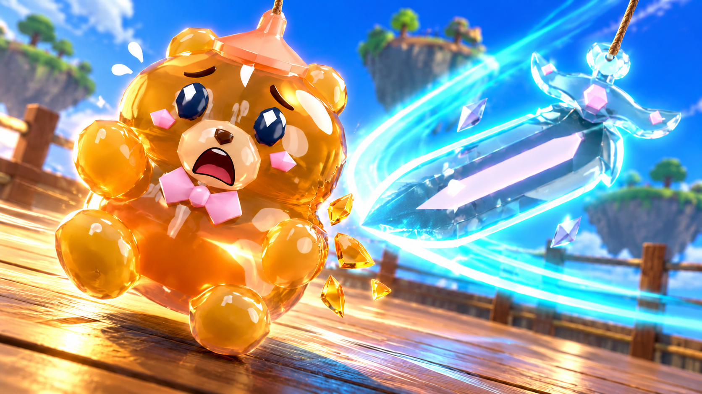
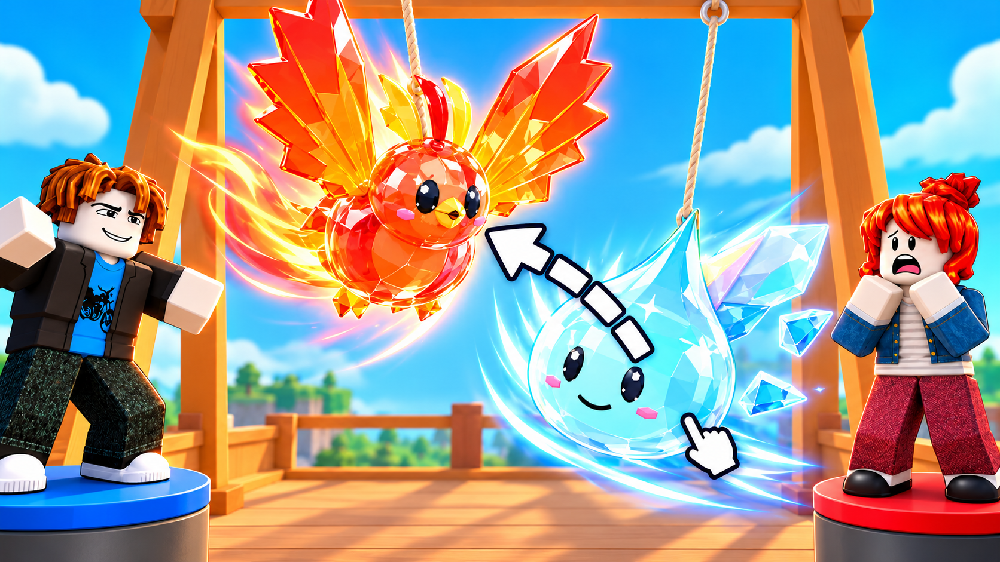

Bear panic — rope correction

Power duel



Browser scaling only; original PNG files unchanged. These are generated key-art concepts, not captured gameplay or proven CTR winners. Initial quiet portrait drafts were rejected by the creator and are not selected finals.